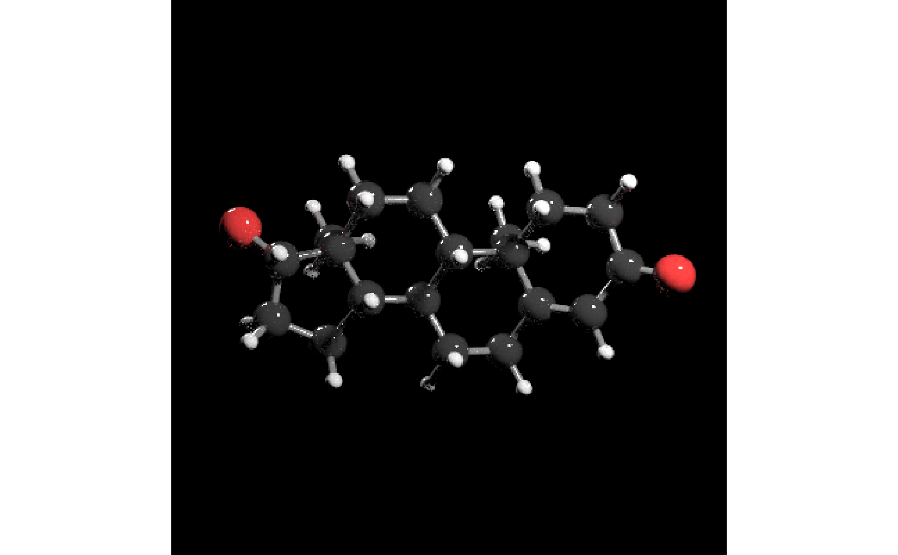

get_molecule.RdLoads the structure of a molecule by fetching an SDF file from Pubchem, which can be piped to generate_full_scene
get_molecule(molecule)A character variable of a compound name or a numeric variable of an official compound ID
List giving the atom locations and the connections between atoms.
# \donttest{
get_molecule("caffeine") %>%
generate_full_scene() %>%
render_model()
#estradiol (aka estrogen)
get_molecule(5757) %>%
generate_full_scene() %>%
render_model()
get_molecule("testosterone") %>%
generate_full_scene() %>%
render_model()
#> Error in curl::curl_fetch_memory(url, handle = handle): Timeout was reached: [pubchem.ncbi.nlm.nih.gov] Failed to connect to pubchem.ncbi.nlm.nih.gov port 443 after 5202 ms: Connection timed out
get_molecule("aspirin") %>%
generate_full_scene() %>%
render_model()

get_molecule("rutoside") %>%
generate_full_scene() %>%
render_model()
#> Error in curl::curl_fetch_memory(url, handle = handle): Timeout was reached: [pubchem.ncbi.nlm.nih.gov] Failed to connect to pubchem.ncbi.nlm.nih.gov port 443 after 5204 ms: Connection timed out
#If the 3D SDF doesn't exist, this function will pull the 2D SDF and inform the user
get_molecule("cyanocobalamin") %>%
generate_full_scene() %>%
render_model()
#> Loaded SDF is 2D
# }